Թեստ 24
30:00
1. «Ճանապարհային երթևեկության անվտանգության ապահովման մասին» ՀՀ օրենքի համաձայն` ճանապարհային երթևեկությանը մասնակցող տրանսպորտային միջոցը տեխնիկապես սարքին վիճակում պահպանելու համար պատասխանատվություն կրում է`
2. «Ճանապարհային երթևեկության անվտանգության ապահովման մասին» ՀՀ օրենքի համաձայն` միջազգային վարորդական վկայականները տրվում են`
3. Տրանսպորտային միջոցների շահագործումն արգելվում է, եթե`
4. Տրանսպորտային միջոցների շահագործումն արգելվում է, եթե`
5. Ո՞ր ուղղություններով է թույլատրվում երթևեկությունը:
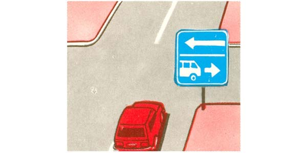
6. Նշաններից ո՞րն է ցույց տալիս տրանսպորտային միջոցների կանգառն ու կայանելն արգելող ճանապարհային նշանների ազդման գոտին:
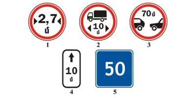
7. Ի՞նչի մասին է զգուշացնում այս ճանապարհային նշանը։
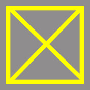
8. Տրանսպորտային միջոցները խաչմերուկը կանցնեն հետևյալ հերթականությամբ՝
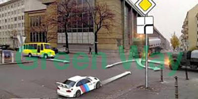
9. Հետադարձը նշված վայրում
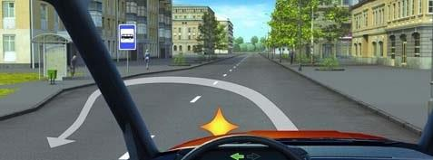
10. Ձախ շրջադարձ կատարելիս վարորդն ո՞ւմ է պարտավոր զիջել
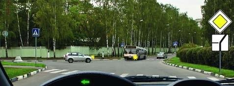
11. Թույլատրվու՞մ է արդյոք ավտոմոբիլի կայանումը նշված տեղում
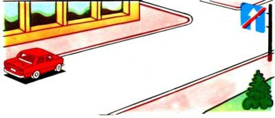
12. Կանգառի կետերի տարածքից դուրս թույլատրվու՞մ է ընդհանուր օգտագործման տրանսպորտային միջոցներին կանգառ կատարել:
13. Ի՞նչ առավելագույն արագությամբ է թույլատրվում ավտոբուսի երթևեկությունը այս ճանապարհային նշանի ազդեցության ճանապարհահատվածներում:
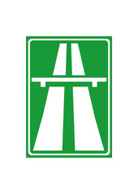
14. Տրանսպորտային միջոցի վրա վթարային լուսային ազդանշանը պետք է միացված լինի`
15. Թույլատրվում է հետադարձն այս վայրում
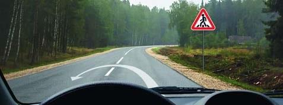
16. Ո՞ր վարորդն է ճիշտ կատարել կանգառը
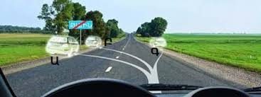
17. Տրանսպորտային միջոցի կողքից` եզրաչափային լույսի արտաքին եզրից 0,3 մ դուրս ցցվելու դեպքում բեռը պետք է արդյո՞ք նշվի օրվա լուսավոր ժամերին «Մեծ եզրաչափերով բեռ» ճանաչման նշանով, իսկ օրվա մութ ժամանակ և անբավարար տեսանելիության պայմաններում, նաև` առջևից սպիտակ, իսկ հետևից` կարմիր գույնի լապտերիկներով կամ լուսանդրադարձիչով:
18. Նշաններից ո՞րն է 5 տոննա զանգված ունեցող բեռնատարի վարորդին պարտադրում աջ շրջադարձ կատարել խաչմերուկում
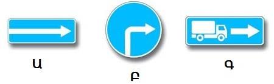
19. Խաչմերուկն ուղիղ անցնելիս վարորդը
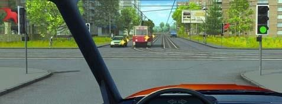